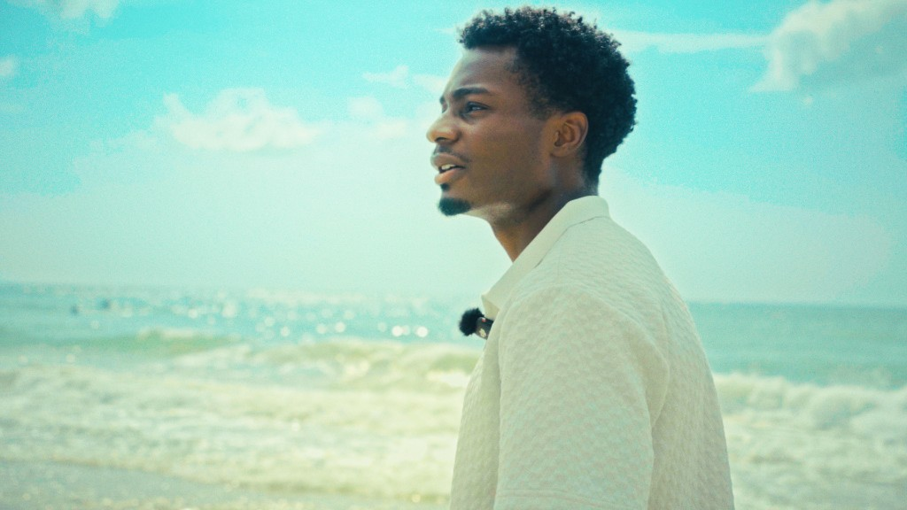

Documentary · Wilmington · City permit
Welcome to Wilmy
A feature-leaning look at Cape Fear surf and beach culture — engineered as destination storytelling for visitors and a warm-lead machine for the businesses that define the coast.
The film
Not a brochure. A portrait.
Welcome to Wilmy follows the people who make Cape Fear feel like itself — surfers, shop owners, board builders, beach-day regulars, and the quiet rituals between dawn patrol and last light.
It is shot under a City of Wilmington permit, with a festival cut aimed at Cucalorus. The tone stays observational and warm: salt, wood, caffeine, and the small economies that keep a beach town honest.
Runtime target sits in the feature-leaning documentary band (roughly 45–70 minutes for the festival cut), with short destination cutdowns for tourism partners and social.

What you’ll see
Threads on the strand.
Dawn patrol to last glass
Sessions, board talk, and the people who treat the water like a second schedule — without turning the coast into a postcard montage.
Shops that define the block
Board shops, cafes, rentals, and beach brands filmed as characters, not product placements — then offered tourism and brand cutdowns after the fact.
Cape Fear as a character
Wilmington’s shoreline identity — ferry light, pier weather, off-season quiet — held in the frame so visitors feel the place before they book it.
For Wilmington
The commercial flywheel.
Every shop, board, and beach business in frame is a potential client for D.C Alacrity’s commercial unit. The documentary builds goodwill and footage; destination packages and 24–48h brand films convert that into paid work for the same local economy.
Same crews that ship Sidequest and Right Here Right Now! — paid day rates on client work that keep the bench warm between IP shoots.
Festival cut
Cucalorus-ready narrative documentary
Tourism cutdowns
30–90s place films for boards & venues
Brand films
Spark / Brand packages for shops on screen
Social packs
Captions-ready clips for local accounts
Status
In motion on the coast.
City of Wilmington permit
Production access for public coastal storytelling under local permit — not guerrilla tourism B-roll.
Interviews & observational days
Subject outreach and coast coverage rolling as schedules and weather allow. Additional shops can still request inclusion.
Festival assembly + partner cutdowns
Picture lock toward Cucalorus submission windows, then tourism / brand derivatives for participating businesses.
Hire from the same set
Seen on screen? Let’s talk.
If your Wilmington or Cape Fear business appeared — or should — destination packages and brand films are open now.
Come for the coast. Stay for the story.
Wilmington on screen — built by a North Carolina crew that also runs the commercial desk.